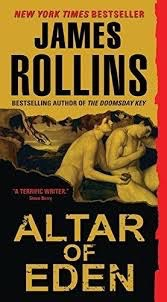

|
|  |
Altar of Eden
|
James Rollins
|
 |
Fiction
|
Harper
|
Guest Review: Steve Berry on "Altar of Eden" by James Rollins I first started to hate James Rollins in 1999. That was when I picked up a paperback original called Subterranean, Rollins' first book. While I was struggling even to write a manuscript, this veterinarian out in California had actually done it and sold the thing. I hated him. Over the next few years, I would wander into a bookstore and discover that the 'vet from Sacramento' had written more stories. I read them all, titles like Ice Hunt, Amazonia, and Excavation and hated him even more. There I was, struggling to get published, and this guy had found the big time.
I finally made it to print in 2003 and, sure enough, who's my chief competition? You got it. James Rollins. The guy creates Sigma Force and writes one New York Times bestseller after another. Titles like Map of Bones, Black Order, The Last Oracle, and The Judas Strain. Amazingly, while this string of Rollins' books flooded bookstores, I managed to eke out some modest success. But every time things started going right, here came that 'vet from California' again with another book.
Occasionally, I'm asked to provide a quote or two for someone else's book. I can't tell you how many times my words of praise languish on the back cover while Rollins' is front and center. Rollins. Rollins. Rollins. That's all I hear. Even on Amazon, in the section titled "Customers Who Bought This Item Also Bought," ON MY BOOK PAGES, there's always a Rollins cover or two staring back at me from the screen.
And, if things weren't bad enough, the 'vet from California' wrote another series. Some character called Jake Ransom and The Skull King's Shadow. It's not enough Rollins is everywhere in adult fiction (taking up valuable spots on the bestseller lists), now he has to claim a piece of the young adult pie, too. I read that he's going to write more of those things. Apparently, the first one did okay. Like that was a big surprise.
Which brings us to Altar of Eden, Rollins' latest concoction. Here he goes again, not satisfied with a thriller out in the summer, he has to publish another in the winter. Which, by the way, directly competes with me (of course, Rollins doesn't care). This new book has it all. A savvy veterinarian (like that was a stretch), genetic engineering on long extinct animals (which was fascinating, I have to admit), fractal science (whatever that is), biological warfare (in ways you've never seen before), and mach-speed mayhem. The thing is drum-tight in its execution. Does this guy have herbs that stimulate his imagination in some amazing way? I read Altar of Eden in two sittings (yeah, it's that good) and, when finished, I promptly hurled the book across the room. It landed on the shelf where all of Rollins' other tomes stand, each sheathed in plastic, first editions, and, of course, signed (for which he charged me $5.00 a piece, cash. He wouldn't take my check).
'Oh, the humanity.'
I barely bang out a-book-a-year and Rollins writes three.
All of them great.
Like I said, I hate this guy.
Which is too bad, because he's not only a terrific writer but also a close friend.
|
|
|
|